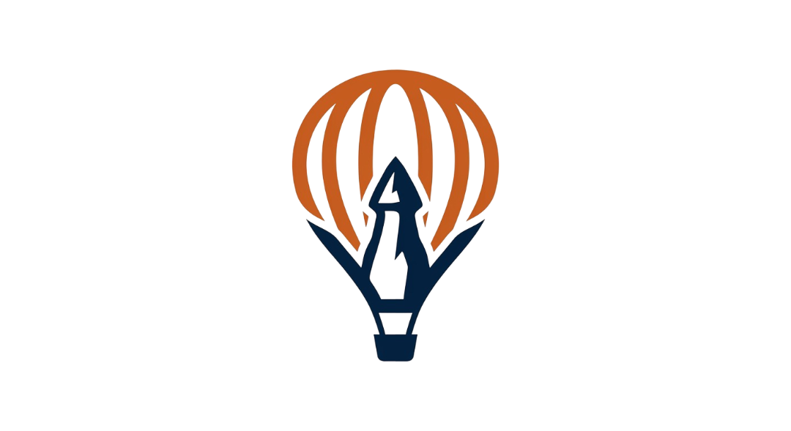
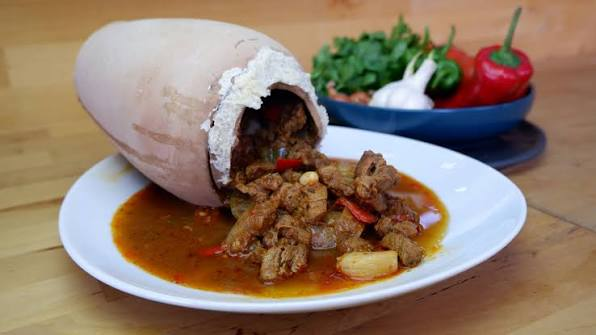
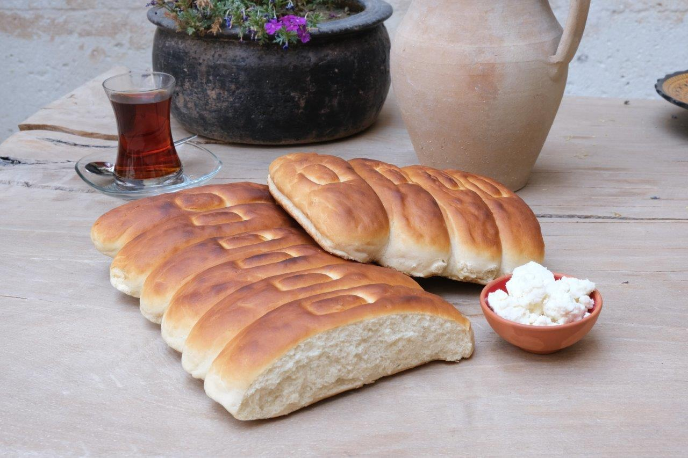
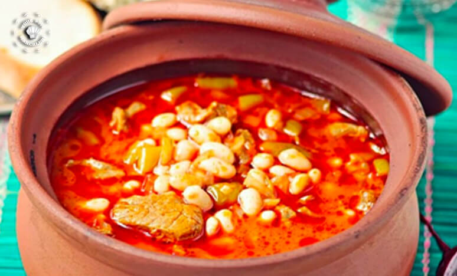

KapadokyaTurBölgenin toprağından ve tarihinden süzülüp gelen yöresel tatlar.

Kapadokya'nın ve Avanos çömlekçiliğinin gastronomiye en büyük armağanıdır. Kuzu eti, domates, sarımsak ve sivri biberin Avanos çömlekleri (testi) içine doldurulup ağzının hamurla kapatılmasıyla hazırlanır. Odun ateşinde ağır ağır kendi suyuyla pişen bu lezzet, sunum sırasında testinin kırılmasıyla görsel bir şölene dönüşür.
📍 En iyi Uçhisar, Avanos ve Göreme restoranlarında bulunur.
Alışık olduğumuz yuvarlak ve susamlı simitlerden çok farklıdır. Nevşehir simidi; dikdörtgen şekli, susamsız pürüzsüz yüzeyi ve en önemlisi "nohut mayası" ile yapılan özel tatlımsı hamuruyla öne çıkar. Yöresel kahvaltıların, tulum peynirinin ve çay saatlerinin vazgeçilmezidir.
📍 Nevşehir merkezdeki tarihi taş fırınlarda taze bulunur.
Geleneksel Türk mutfağının baş tacı kuru fasulye, Kapadokya'da çömlek içinde ve tandır ateşinde bambaşka bir kimliğe bürünür. Yöresel adıyla "Ağ Pakla", kemikli et veya pastırma ile toprak çömleklere konur, köz halindeki tandırın içine gömülerek saatlerce helmelenene kadar pişirilir.
📍 Ürgüp ve Derinkuyu'daki geleneksel lokantalarda tadabilirsiniz.